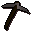

Steel pickaxe

| Config name | steel_pickaxe |
| Item id | 1269 |
| Value | 500 gp |
| Weight | 5lb |
| Members | No |
| Tradeable | Yes |
| Stackable | No |
| Equip slot | righthand |
| Options | Wield |
| Category | weapon_pickaxe |
| Level required | 6 |
| Defined in | scripts/skill_mining/configs/pickaxes.obj |
| Equipment stats | Stab att 8, Slash att -2, Crush att 6, Slash def 1, Strength 9 |
Steel pickaxe
Used for mining.
Sold at
| Shop | Shopkeeper | Stock |
|---|---|---|
| Nurmof's Pickaxe Shop. | 4 |
Quests
Referenced in scripts
scripts/_test/scripts/cheats/cheat_bank.rs2scripts/levelrequire/scripts/tier5.rs2scripts/levelup/scripts/levelup_unlocks_mining.rs2scripts/minigames/game_trail/scripts/easy/trail_clue_easy_reward.rs2scripts/quests/quest_doric/scripts/quest_doric.rs2scripts/quests/quest_legends/scripts/strange_barrel.rs2scripts/skill_mining/scripts/pickaxe_checker.rs2